自然语言处理：笔记整理
Last updated on January 19, 2026 pm
本文为 SJTU-CS3602 自然语言处理课程的笔记整理。
Lecture 2: 词向量
词的表示 (Word Representation)
我们首先需要解决一个根本问题：如何让计算机理解和处理单词。
基础版：词的单热点表示 (One-Hot Representation)
- 概念：为词典中的每一个词分配一个唯一的索引，然后用一个非常长的向量来表示一个词
- 这个向量的长度等于词典的大小，在代表当前词的索引位置上值为 1，其余所有位置都为 0
- 示例：对于句子“我 爱 自然语言处理”，假设这五个词在词典中的索引分别是 1 到 5
- “我” 的向量是
[1, 0, 0, 0, 0] - “爱” 的向量是
[0, 1, 0, 0, 0] - 以此类推
- “我” 的向量是
- 缺点：
- 语义鸿沟：这种表示方法只是机械地记录了词，无法表达词与词之间的的远近亲疏关系
- 例如，“我”和“爱”的向量是正交的，无法体现它们之间的关系
- 维度灾难：当词典非常大时，向量维度极高且非常稀疏，计算效率低
- 语义鸿沟：这种表示方法只是机械地记录了词，无法表达词与词之间的的远近亲疏关系
进阶版：词的分布式表示 (Distributed Representation)，即词向量 (Word Vectors)
- 核心思想：使用一个低维、稠密的实数向量来表示一个词
- 定义：将词表示为高维连续空间中的一个点（向量），向量的每一个维度代表一个潜在的语义特征
- 优势：
- 表达语义：向量在高维空间中的位置代表了词的语义
- 表达关系：向量间的远近关系（如余弦相似度）可以度量词与词在语义上的亲疏关系
- 为什么叫“分布式”表示：与独热表示（局部表示）中一个词只对应一个维度不同，分布式表示中，一个词的语义被“分散”到向量的多个维度中共同表达，因此被称为分布式表示
两个经典的词向量模型
词向量的语义从何而来？英国语言学家 John Rupert Firth 提出：“You shall know a word by the company it keeps.” (观其伴而知其义)，即一个词的意义由它周围的词（上下文）来决定。基于这个思想，诞生了两个经典模型。
CBOW (Continuous Bag-of-Words) 模型
- 任务：用上下文的词来预测中心的当前词
- 示例：在句子“我 看见 一只 __ 快速 跑进了 教室”中，用周围的词（“我”、“看见”、“一只”、“快速”、…）来预测中间的词是“小猫”
为了表述简洁，我们首先考虑上下文只包含了一个词的 CBOW 模型。
- 结构：输入层 -> 隐层 -> 输出层
- 输入层 ()：上下文单词的独热向量
- 隐层 ()：输入词的词向量表示
- 输出层 ()：一个概率分布向量，表示词典中每个词是中心词的概率
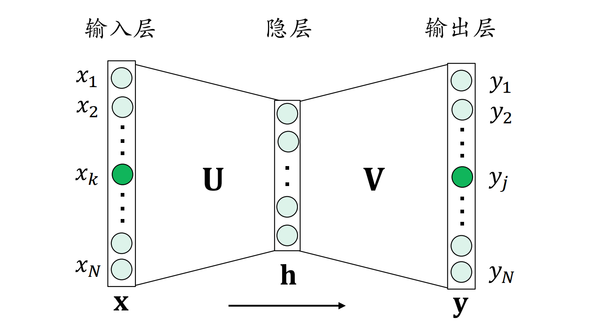
- 计算过程：
- 隐层向量 ，这里的 是一个参数矩阵
- 输出向量 ，这里的 是另一个参数矩阵
- 通过 Softmax 函数将输出向量 归一化，得到最终的概率分布
- 目标：调整参数矩阵 和 ，使得模型预测出的概率在真实的中心词上尽可能大，别的词上尽可能小
接着，考虑更多上下文的 CBOW 模型。
- 结构：CBOW 模型的隐层 通过取每个上下文单词对应的 的平均值得到
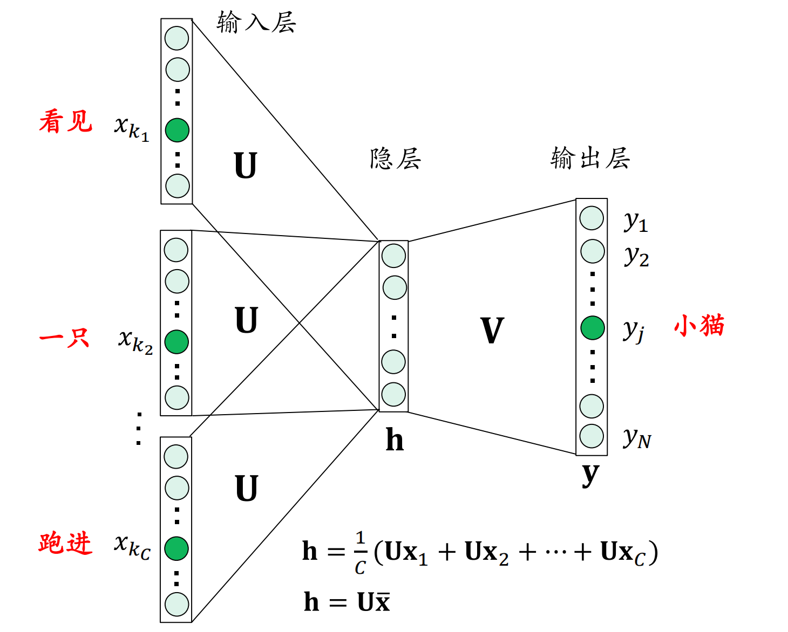
- 公式：
- 其中 是上下文单词的数量
Skip-gram 模型
-
任务：用中心的当前词来预测其上下文的词
-
示例：在同样的句子中，给定中心词“小猫”，来预测它周围可能出现的词（“我”、“看见”、“一只”、“快速”、…）
-
结构：与 CBOW 类似，但方向相反。
- 输入层 ()：中心词的独热向量
- 隐层 ()：中心词的词向量表示
- 输出层 ()：预测多个上下文单词的概率分布
-
目标：调整参数，使得模型在真实的上下文单词上预测出的概率尽可能大
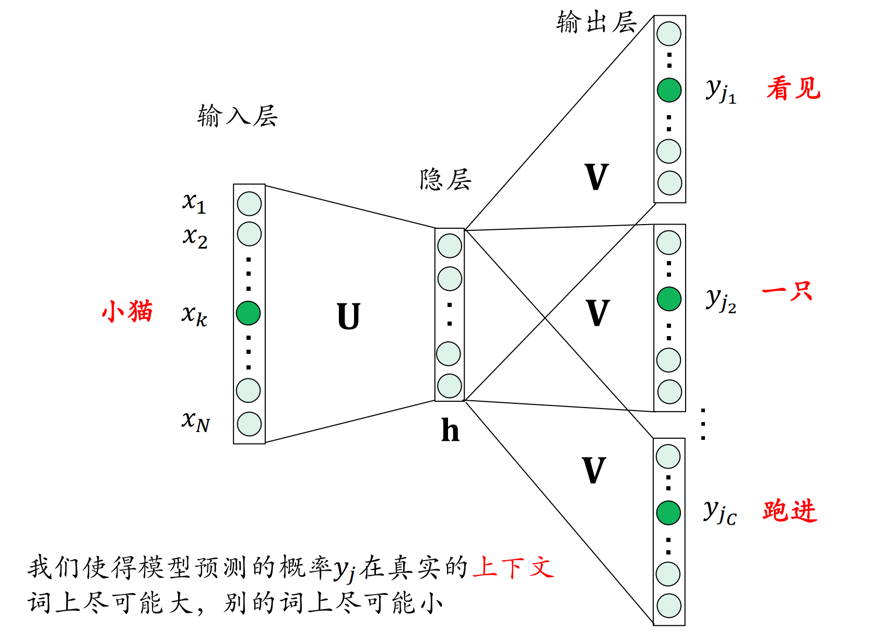
词向量模型的训练：反向传播算法（Back-propagation）
我们已经了解 CBOW 和 Skip-gram 模型的基本结构，现在的问题是：如何训练这些模型，也就是如何学习到最优的参数矩阵 和 。这里，我们以只有一个词上下文的 CBOW 模型为例。
- 前向计算：
- 损失函数：我们的目标是让模型预测的概率 在真实的中心词（假设其索引为 ）上尽可能大，于是定义损失函数 ，目标是最小化这个损失，即最大化
- 核心任务: 为了用梯度下降法最小化损失 ，我们必须计算出损失 对于两个参数矩阵 和 的梯度，即 和
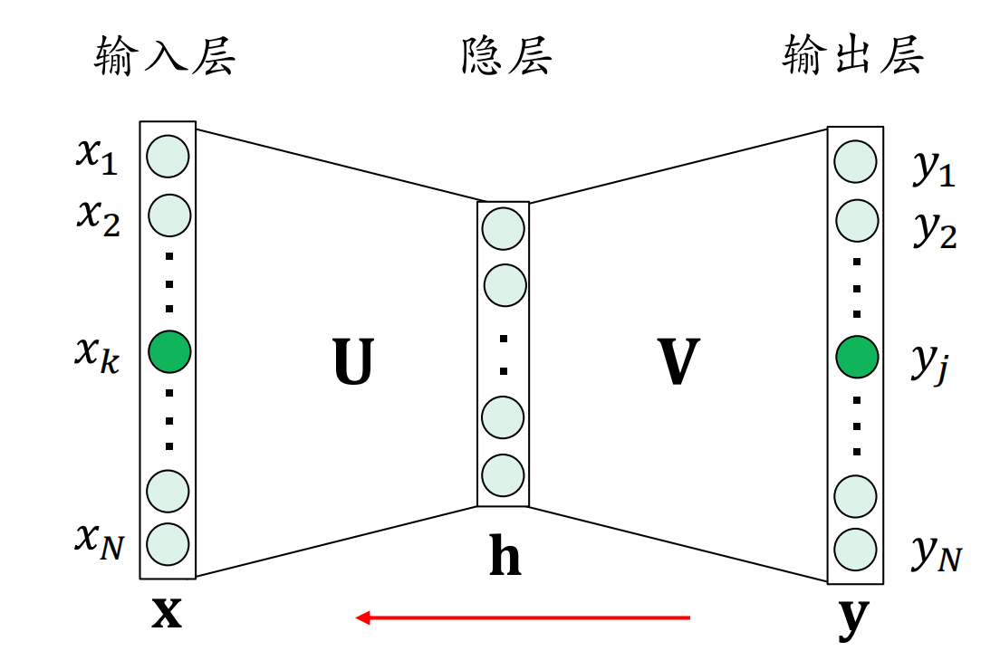
首先，化简损失函数 。
接着，将 对 求导。
为了简化表达，定义误差信号 。
从而 可以简写为：
最后，将 对 求导。
计算出梯度后，再设置一个学习率 ，我们就可以用梯度下降法来更新参数了。
那么，这一算法为什么叫“反向传播”呢？
- 答案：因为这个算法的核心在于预测误差 的逐层“反向传播”。
- 理解：
- 观察两个梯度公式：
- 我们可以把任何一层权重矩阵的梯度分解成两部分：该层的输入 和 该层接收到的误差信号
- 对于输出层权重 来说，它的输入是 ，它直接接收到的误差信号就是
- 对于输入层权重 来说，它的输入是 ，它接收到的误差信号是 从输出层经过 反向传播回来的结果，这个结果就是
- 因此，“反向传播”形象地描述了误差信号从网络末端（输出层）开始，乘以前一层权重的转置，一步步向网络前端（输入层）传递的过程。
- 观察两个梯度公式：
注意，在这个简化的模型里，隐层没有激活函数。如果中间层存在激活函数（例如 Sigmoid 或 ReLU），那么在反向传播误差时，还需要再乘上激活函数的导数。
对于 Skip-gram 模型，其损失函数定义为：
词向量模型的优化
- 问题：实际应用中的词汇表通常非常大，可能包含几十万甚至上百万个词，而 Softmax 函数需要对词典中每一个词都计算一次指数并求和，计算开销巨大
- 解决方案：将一个大的多分类问题转化为多个二分类问题
Hierarchical Softmax (分层柔性最大化)
- 思想：将词典中的所有词构建成一棵哈夫曼树（Huffman Tree），其中每个叶子节点代表词典中的一个词
- 预测一个特定单词的概率，就变成了从树的根节点开始，经过一系列“向左走”还是“向右走”的二分类决策，最终到达对应叶子节点的过程
- 目标词的最终概率，等于这条路径上所有二分类决策概率的乘积
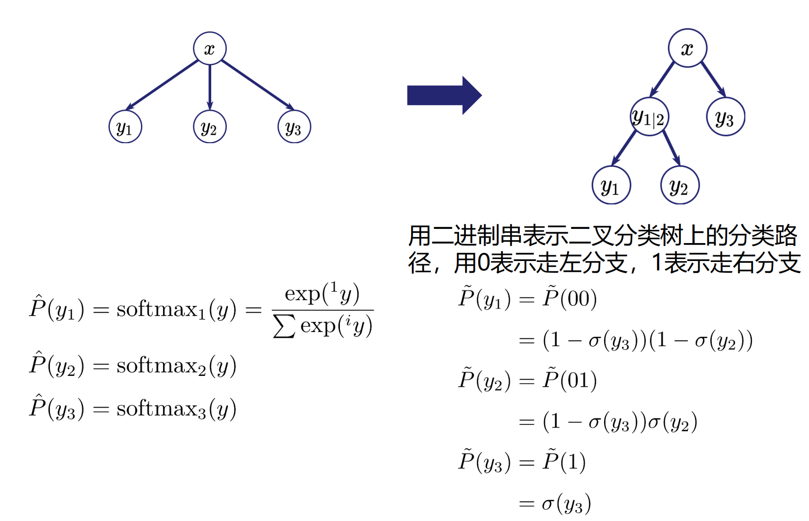
- 哈夫曼树：一种最优二叉树，高频词的路径短，低频词的路径长，可以最小化平均查找路径
- 在这里，频率就是每个类别的样本比例
- 构造：可以利用贪心法，不断地合并权重最小的子树得到
- 优点：将计算复杂度从 （ 是词典大小）降低到
Negative Sampling (负采样)
-
核心思想：我们训练模型的目的，只是为了得到高质量的词向量，并不需要在所有词上计算精确的输出概率
- 我们只需要模型能够在正确单词上的输出尽可能大，错误单词上的输出尽可能小就可以了
-
新的优化目标：我们把优化函数重新设计成为：
- 最大化正确单词上的输出：对于一个给定的（上下文，中心词）正样本对，我们希望模型给出的分数尽可能高
- 最小化“噪声”单词上的输出：我们再在噪声分布 下随机抽取 个错误的词（称为负样本），我们希望模型给这些负样本的分数尽可能低
其中 是 Sigmoid 函数，输出值范围是 。
-
优势：不需要归一化，甚至不需要计算每个单词的输出概率！
- 我们只需要计算正样本和选中的几个负样本的分数并更新对应的权重即可，计算量大大减少
-
噪声分布：负样本的抽样并不是完全均匀随机的，而是采用如下的噪声分布，其中 是单词 在语料库中出现的频率
- 采用小于 1 的幂，可以适当增加罕见词被采样为负样本的概率，避免高频词总是被选中，有助于改善训练得到的词向量性能
词向量的性质
通过训练得到的词向量具有非常有趣的语义特性。
- 语义相似性：语义相近的词，其词向量在空间上也相近
- 例如，king 和 queen 的向量很接近
- 线性关系：词向量在空间中的偏移量可以捕捉到词与词之间的类比关系
- 示例 1：
- 示例 2：
词向量模型的缺点
传统的词向量模型存在多义词问题。
- 多义词问题：传统的词向量模型为每个词只学习一个固定的向量，无法解决一词多义的问题
- 示例：“苹果”可以指水果，也可以指苹果公司
- “他手里拿了一个苹果正在吃”
- “他手里拿了一个苹果然后插上了充电器”
- 在这两种语境下，模型会给“苹果”同一个词向量，这显然是不准确的
高级版：与上下文相关的词向量（context-dependent word vectors）
- 解决方案：需要词向量的高级版——与上下文相关的词向量 (Context-dependent word vectors)
- 例如后续课程会讲到的动态词向量和预训练模型
常用工具
- CBOW 的 Pytorch 实现：https://docs.pytorch.org/tutorials/beginner/nlp/word_embeddings_tutorial.html#exercise-computing-word-embeddings-continuous-bag-of-words
Lecture 3: 矩阵求导和反向传播
这节课讲解了神经网络的数学基础，以及反向传播算法。
导数与梯度
-
导数 (Derivative):
- 定义：一个标量，表示当输入变量 发生微小改变时，标量函数 的变化率
-
偏导数 (Partial Derivative):
- 定义：一个标量，对于多变量函数 ，偏导数是只考虑其中一个变量变化时的导数，而将其他变量视为常数
- 示例：对于 ，对 的偏导
-
梯度 (Gradient):
- 定义：一个向量，由函数所有变量的偏导数按顺序组成
- 公式：假设函数 具有 个输入和 1 个输出，即 ，那么
- 用途：梯度向量指向函数值增长最快的方向
- 在机器学习中，我们通常沿着负梯度方向更新参数，以最快速度减小损失函数
-
Hessian 矩阵 (海森矩阵):
- 定义：一个矩阵，是梯度的一阶导，即对梯度的每个分量（偏导数）再求一次所有偏导数，包含了函数的所有二阶偏导数
雅各比矩阵 (Jacobian Matrix)
当函数不仅有多个输入，还有多个输出时，梯度的概念被推广为雅各比矩阵。
-
场景：函数 有 个输入 和 个输出
-
定义：一个 的矩阵，其中第 $i4 行、第 列的元素是第 个输出 对第 个输入 的偏导数
- 雅各比矩阵是向量对向量求导的结果，包含了所有可能的一阶偏导数
-
经典例子：
链式法则 (Chain Rule)
-
复合函数的梯度（标量形式）：
- 法则：最终输出对最初输入的导数，等于所有中间环节偏导数的乘积
- 示例：设有函数 和 ，那么 对 的导数
-
复合矩阵函数的梯度：
- 法则：当函数涉及向量和矩阵时，法则依然成立，只是乘法变成了雅各比矩阵的乘法
- 示例：设有矩阵函数 和 ，那么 对 的雅各比矩阵
这正是反向传播算法的数学本质：误差从网络末端逐层向前端传播，每经过一层，就乘以该层的雅各比矩阵。
反向传播算法实例
我们以带有激活函数的 3 层 MLP 为例，介绍反向传播算法。
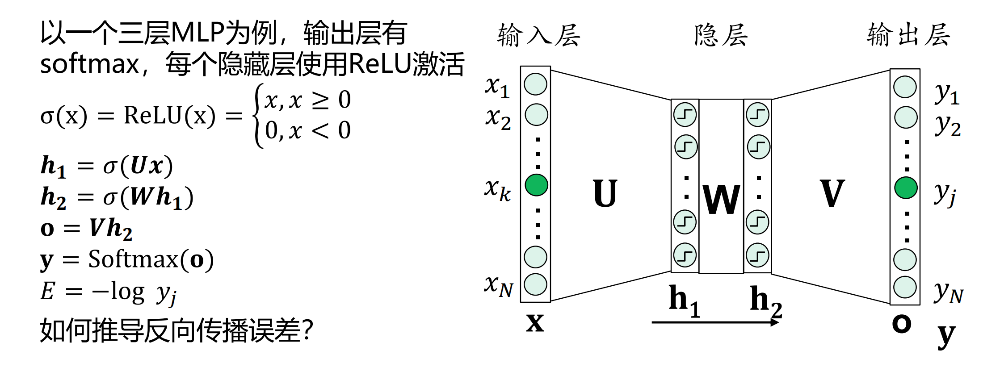
我们的目标是利用雅各比矩阵和链式法则，推导出损失 对每一层权重 , , 的梯度。
首先，计算输出层的误差信号，即损失 对输出分数 的梯度。
引入误差信号 ，则得到
现在有了起始的误差信号 ，就可以利用链式法则逐层向后计算了。
观察上述推导，我们可以总结出反向传播的规律：
任何一层权重矩阵的梯度 = 反向传播到该层的误差信号 × 该层在前向传播时的输入
- 对于 ，误差信号是 ，输入是
- 对于 ，误差信号是 经过 和 ReLU 传播后的 ，输入是
- 对于 ，误差信号是继续经过 和 ReLU 传播后的 ，输入是
计算图 (Computational Graph)
使用计算图，我们可以更系统、更模块化地理解和实现反向传播。
- 计算图：来表复合函数的运算过程，其中每个内部节点代表一次计算
- 前向传播：数据和计算结果沿着图的边，从输入到输出正向流动
- 反向传播：误差信号（梯度）沿着图的边，从输出到输入反向流动
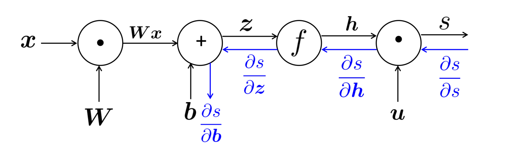
- 反向传播的法则：Downstream Gradient = Upstream Gradient × Local Gradient
- Upstream Gradient (上游梯度): 从上游（靠近最终输出）传来的梯度
- Local Gradient (本地梯度): 节点自身运算对输入的导数（雅各比矩阵）
- Downstream Gradient (下游梯度): 节点计算后，准备传给下游（靠近初始输入）的梯度
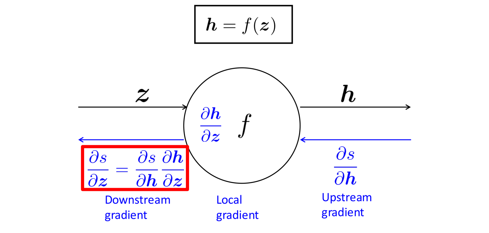
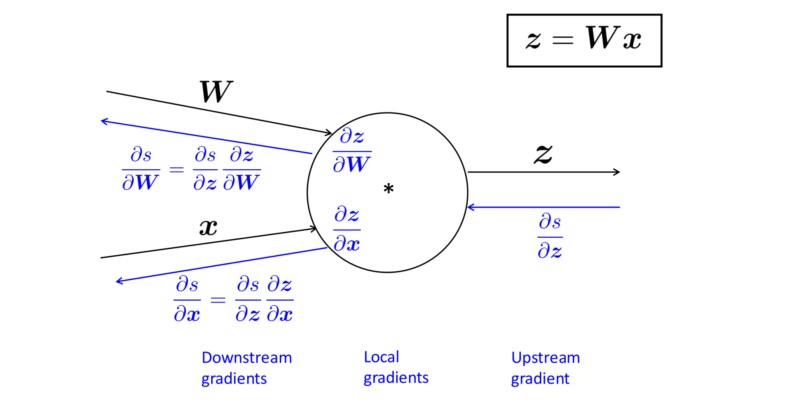
- 简单实例
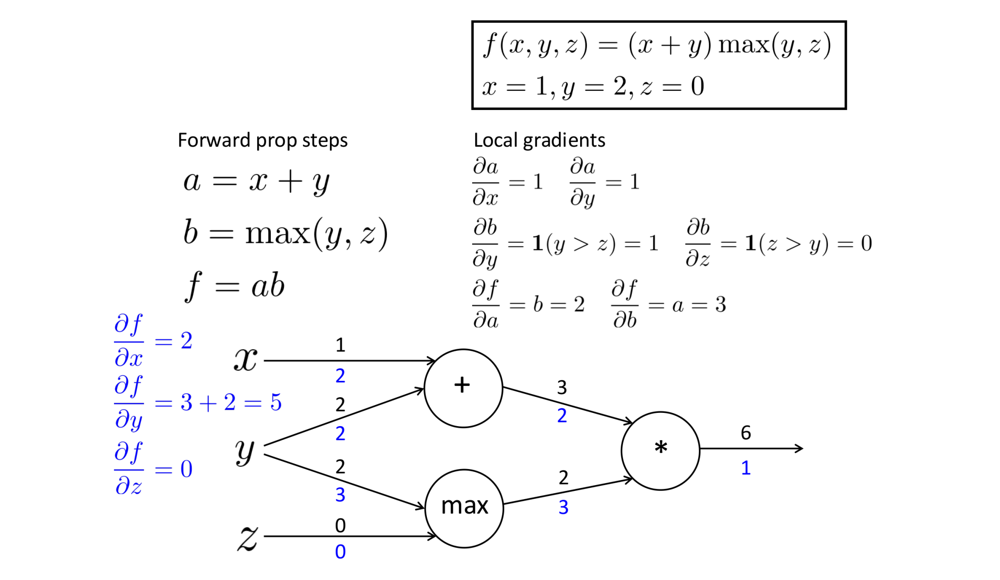
反向传播的代码实现
现代深度学习框架正是基于计算图的思想来自动实现反向传播的。
-
实现概述：
- 第一步：前向传播：按拓扑顺序遍历计算图，计算每个节点的值，并缓存中间结果（如输入值）
- 第二步：反向传播：逆序遍历计算图，每个节点接收上游梯度，利用缓存的输入值计算本地梯度，然后计算并传递下游梯度
-
伪代码：
1 | |
- 单节点代码实现：以乘法节点为例
1 | |
Lecture 4: 语言模型
什么是语言模型
- 语言建模 (Language Modeling)：是一个学习任务，其核心目标是让一个模型学会根据给定的上文，来预测下一个最可能出现的词
- 例子：给定句子“学生们在课堂上打开了他们的___”，模型需要预测空格处最可能填入的词，比如“课本”、“电脑”等
- 正式定义：给定一个词序列 ，语言建模任务的目标是计算下一个词 的条件概率分布 ，这个分布会告诉我们词典 中每一个词出现在下一个位置的概率
- 语言模型 (Language Model)：执行“语言建模”这个任务的系统或模型，就被称为语言模型
语言模型的应用场景
-
计算文本概率：语言模型最基本的功能是计算一段文本出现的概率，可以理解为这段文本有多“通顺”
- 原理：利用概率的链式法则，一段文本 的联合概率可以分解为一系列条件概率的乘积：
这个分解后的每一项，正好就是语言模型所计算的概率。
- 原理：利用概率的链式法则，一段文本 的联合概率可以分解为一系列条件概率的乘积：
-
联想输入/自动补全：在搜索引擎、输入法中，当你输入“我明天要去…”时，系统会推荐“医院”、“学校”等词
- 这背后就是语言模型在预测下一个最可能的词
-
文本生成：语言模型可以像“文字接龙”一样生成连贯的文本
- 生成过程：
- 给定一个初始条件（如 “today the”）
- 语言模型计算出下一个词的概率分布
- 从这个分布中采样一个词（如 “price”）并添加到末尾
- 将新的序列（“today the price”）作为新的条件，重复上述过程
- 通过这种自回归的方式，模型可以生成很长的文本
- 生成过程：
-
机器翻译：在统计机器翻译中，语言模型是核心组件之一
- 翻译模型可能会生成多个候选句子，例如对于“我对你感到满意”，可能生成 “I satisfied with you” 或 “I’m satisfied with you”
- 语言模型会判断出 “I’m satisfied with you” 这句话在英语中出现的概率更高，更通顺，从而帮助翻译引擎选择最优的翻译结果
语言模型的种类
-
基于统计的方法：这类方法的代表就是 N-gram 语言模型，它通过统计大规模语料库中不同词序列（n-grams）的出现频率来计算概率
-
基于神经网络的方法：这类方法使用神经网络（如 RNN, Transformer）来学习词与词之间的复杂依赖关系
如何评价语言模型的性能：混淆度（perplexity）
-
分类精度不适用：对于分类任务，我们可以用“准确率”来评价模型好坏，但语言模型不行，原因是：
- 我们关心的不仅仅是“下一个词是否预测正确”，而是模型在每个预测位置给出的概率分布，特别是真实的下一个词的概率
- 因此，简单判断“下一个词是否预测正确”无法有效衡量语言模型的性能
-
评价标准：给定一段模型没有见过的、足够长的、真实的测试语料，模型对这段语料预测的概率越高，说明这个模型越好
- 核心思想：一个好的语言模型，应该能够给真实、自然的句子赋予高概率
- 足够长：避免模型因为运气好，刚好在要预测的几个位置上表现良好
- 没见过：防止模型通过“背诵”训练集来作弊
-
混淆度 (Perplexity, PPW) 的推导：
- 计算测试集概率：首先，我们计算模型预测 个单词组成的测试集 的文本概率
- 长度归一化（几何平均）：
- 由于概率是连乘的，句子越长，总概率会越小
- 为了消除长度影响，我们将总概率平均到每个词上
- 因为是乘积，所以使用几何平均：
- 物理意义：在测试集中，平均每个模型做出预测的位置上，那个实际出现的真实词被模型赋予的概率
- 取倒数，得到混淆度：为了让指标更直观（数值越低越好），我们对上一步的结果取倒数，得到最终的评价指标——混淆度 (Perplexity per Word, PPW)
- 物理意义：在测试集中，对于每个模型做出预测的位置，那个实际出现的真实词平均被模型赋予的概率的倒数
-
混淆度的理解：
- 取值范围： (词典大小)，PPW 越低，模型性能越好
- 两个极端例子：
- 完美模型：总能以 100% 的概率预测到正确的词，其 PPW 为 1
- 白板模型：对所有词都给出均匀概率 ，其 PPW 为
- 直观解释：混淆度可以被看作是模型在预测下一个词时不确定的选项数量
- 如果一个模型的混淆度是 30，这意味着模型在做预测时，其不确定性等价于从 30 个合理的候选词中进行随机猜测
- 这个值越低，说明模型对下一个词的判断越有把握，候选范围越小，性能越好
N-gram 语言模型
在了解了什么是语言模型之后，我们介绍第一种实现方法——基于统计的 N-gram 语言模型。
N-gram 的定义
- 定义：N-gram 是指文本中连续出现的 个单词组成的块
- 以句子 “学生/打开/了/他们/的/____” 为例
- Unigram (1-gram): 单个词，如 “学生”, “打开”, “了”
- Bigram (2-gram): 两个连续的词，如 “学生 打开”, “打开 了”
- Trigram (3-gram): 三个连续的词，如 “学生 打开 了”
- 4-gram: “学生 打开 了 他们”。
- 核心思想：N-gram 语言模型通过统计不同 n-gram 在大型语料库中出现的频率，来预测下一个词的概率
如何确定 N-gram 语言模型中的参数
我们知道，一个词的出现概率严格来说依赖于它前面所有的词。为了简化问题，N-gram 模型引入了马尔科夫假设。
- 马尔科夫假设：一个词的出现概率，只与它前面 个词有关，而与其他更早的词无关
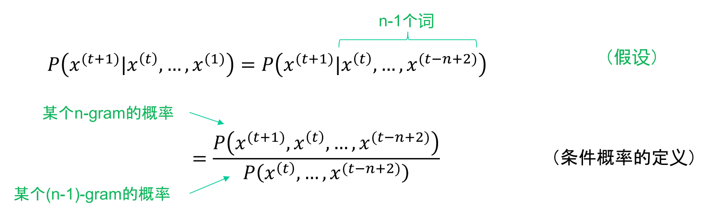
-
N-gram 概率的计算方法：有了马尔科夫假设，可以利用条件概率来计算 N-gram 概率
- 分子是整个 n-gram 序列出现的概率
- 分母是其前缀 (n-1)-gram 序列出现的概率
- 通过在大型语料库中进行计数的方式，来近似这些概率
-
示例：
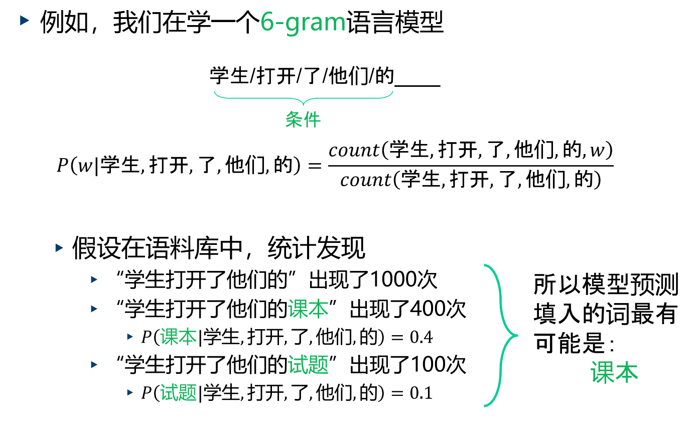
最大似然估计
我们上面用“数数”的方法（即用频率代替概率）来估计参数，这看起来非常直观。但这种做法有理论依据吗？它是否能保证我们的模型是“最优”的呢？
-
训练模型的初衷：调整模型参数，以最大化模型在训练数据上预测出的总概率（即似然函数）
-
最大似然估计 (MLE)： 是一种经典的参数估计方法
- 核心思想：寻找一组参数 ，使得在这组参数下，我们观测到的训练数据样本出现的概率是最大的
-
MLE 的结论：通过数学推导（拉格朗日乘子法），我们发现对 N-gram 语言模型，能够使其在训练集上似然函数最大化的参数 （即给定前文 ，下一个词是 的概率），其最优解恰好就是我们通过频率计数得到的结果
- 理解：我们凭直觉使用的“数数”方法，实际上就是在进行最大似然估计，它不仅简单直观，而且在数学上也是最优的
Unigram、bigram 示例
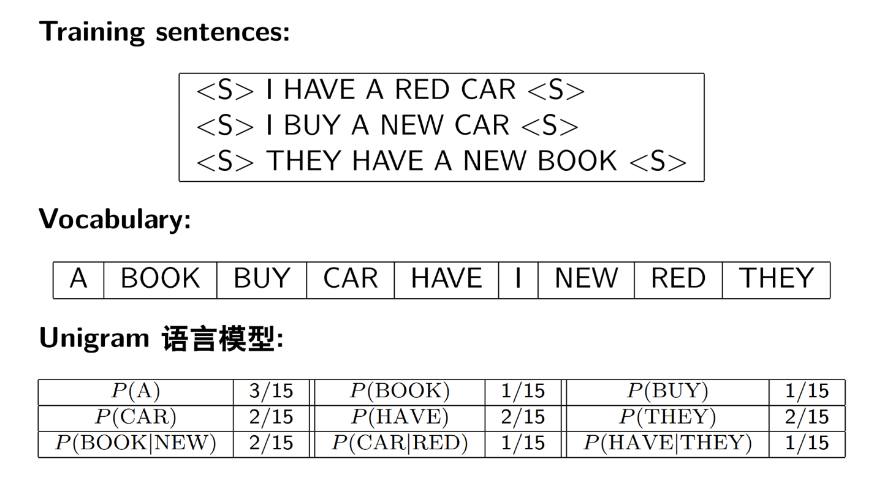

- N-gram 模型的局限性：
- 上下文窗口有限：马尔科夫假设丢弃了长距离的依赖关系
- 例如，在 “当监考员发出指令后，学生打开了他们的___” 这个例子中，“监考员”这个远距离的词其实对预测“试题”很有帮助，但 N-gram 模型（如果 n 不够大）会忽略这个信息
- 生成的文本语义不连贯：虽然 N-gram 生成的文本在局部（n 个词的窗口内）是通顺的，但由于缺乏全局的语义理解，长文本往往会出现逻辑跳跃和语义不连贯的问题
- 数据稀疏问题：这是 N-gram 模型最致命的问题，我们将在下一部分详细讨论
- 上下文窗口有限：马尔科夫假设丢弃了长距离的依赖关系
N-gram 语言模型中的数据稀疏问题及解决办法
数据稀疏是所有基于统计的自然语言处理方法（尤其是 N-gram 模型）面临的核心挑战。
- 问题根源：语言的组合性是爆炸性的，随着 $n4 的增大，可能出现的 n-gram 组合数量会急剧增加，远远超过任何有限语料库能够覆盖的范围
- 具体表现：
- 零概率 (Unseen Events)：很多在现实中完全合理、通顺的 n-gram，可能因为我们的训练语料库不够大，而一次都没有出现过
- 低频次 (Very Low Frequency)：某些 n-gram 虽然出现过，但次数非常少（比如仅 1 次），基于这么少的样本做出的概率估计是极其不可靠的
- 例子：在 Berkeley Restaurant Corpus 上，即使是对于最简单的 bigram 模型，语料中超过 90% 的可能的 bigram 组合都是没有出现过的（即次数为 0）
折扣法（Discounting）
- 方法：修正原始的 n-gram 的频次，将一部分高频 n-gram 的概率值分配到那些零样本的 n-gram 上，使得概率量重新分布
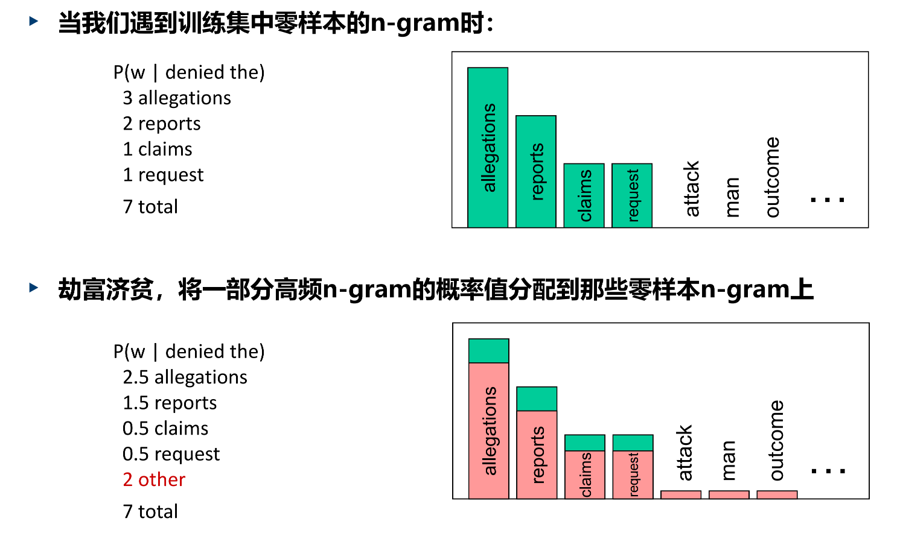
回退（Backoff）及插值（interpolation）
-
回退 (Backoff)：当更高阶的 n-gram 不存在时，回退到使用低一阶的 n-gram 算出来的条件概率来替代
- 例子：当我们试图计算一个 trigram 概率 时：
- 先检查 这个 trigram 在语料中是否出现过
- 如果出现过，就直接用它的统计数据来计算概率
- 如果没出现过（数据稀疏），我们就回退到低一阶的模型，即用 bigram 概率 来近似替代
- 如果 bigram 也没出现过，就继续回退到 unigram 模型，即用 来替代
- 例子：当我们试图计算一个 trigram 概率 时：
-
插值 (Interpolation)：将不同阶的 n-gram 给出的条件概率线性组合起来，给它们不同的权重
神经网络语言模型
前馈神经网络
这种方法直接借鉴了 N-gram 模型的思路：使用固定长度的前文（历史词）来预测下一个词。但它用神经网络代替了简单的频率计数。
-
方法：将 n-1 个历史词的词向量拼接起来，形成一个大的向量，然后将其输入到一个前馈神经网络中，网络最终输出下一个词的概率分布
-
计算流程：以 “喜 欢 这 部 __” 为例
- 输入层：给定前文 “喜”, “欢”, “这”, “部”，我们将每个字表示为其独热向量 (one-hot vector)
- 词嵌入层：通过查询一个词向量矩阵 (这是一个可学习的参数)，将每个字的独热向量转换为低维稠密的词向量
- 拼接 (Concatenation)：将这4个词向量拼接成一个长向量
- 隐藏层：将拼接后的向量 通过一个带激活函数 的全连接层，计算出隐藏层表示 ：
- 输出层：将隐藏层表示 通过第二个全连接层，并使用 Softmax 函数，最终得到词典中每个词的概率分布 ：
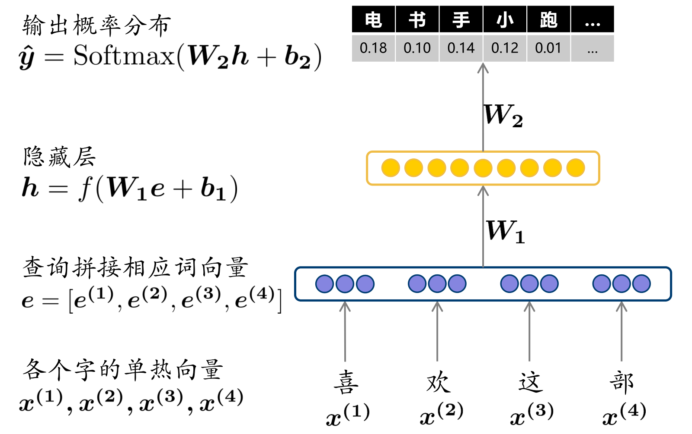
这个模型由深度学习先驱 Yoshua Bengio 在 2003 年提出，是神经网络语言模型的开山之作。
-
优点：
- 缓解数据稀疏：通过使用词向量，模型可以在一个语义空间中操作
- 即使“喜欢这部电影”没见过，但如果模型知道“电影”和“影片”的词向量很相似，它就能将在“喜欢这部影片”上学到的知识泛化过来，这比 N-gram 的严格匹配要好得多
- 参数效率更高：N-gram 模型需要存储海量的 n-gram 频次表，而神经网络模型只需要存储几个权重矩阵，通常占用空间更小
- 并行计算：由于每次预测的输入长度是固定的，理论上可以并行处理不同位置的预测任务
- 缓解数据稀疏：通过使用词向量，模型可以在一个语义空间中操作
-
问题与局限：
- 无法有效建模长时依赖：和 N-gram 一样，它只能看到固定长度 n 的历史，无法建模长时依赖
- 参数量与窗口大小 n 相关：权重矩阵 的大小 直接依赖于 ，如果想扩大历史窗口 ，参数量会线性增长，导致存储和计算问题
循环神经网络
为了解决前馈神经网络语言模型的局限性，特别是固定窗口和无法建模长时依赖的问题，循环神经网络 (RNN) 应运而生。其突破性思想在于在时间维度上共享参数。
-
权重矩阵的问题：前馈模型中，权重矩阵 对每个位置的输入词都有独立的参数，这意味着：
- 需要单独对每一个历史时刻的词学习参数
- 不同时刻间共通的处理要不断重复学习
-
重构权重矩阵：RNN 认为，处理不同位置的词的方式应该是相同的，因此，它将 分解并重构为：
- 一个用于处理当前时刻输入的权重
- 一个用于处理上一时刻信息的权重
- 这两个权重矩阵 和 的尺寸不再与历史长度 相关，并且在处理序列的每一步中，使用的都是同一套 和
-
RNN 的计算流程：RNN 引入了隐藏状态 (Hidden State) ，可以理解为一个记忆单元，在时间步之间传递信息
- 初始化：在处理序列开始前，初始化一个隐藏状态 (通常为零向量)
- 循环计算 (在每个时间步 )：
- 输入：当前时刻的词向量 和上一时刻的隐藏状态
- 更新隐藏状态：将两者结合，通过一个激活函数 ，计算出当前时刻的隐藏状态 ：
- 输出：使用当前隐藏状态 来预测下一个词的概率分布：
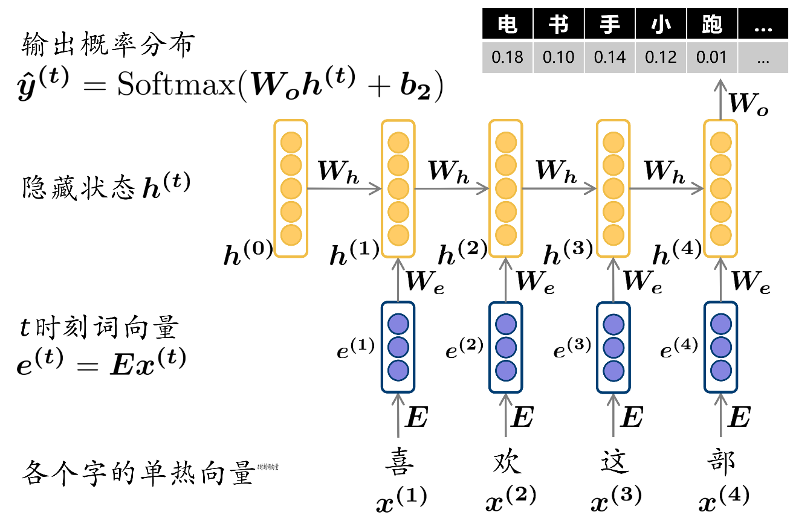
- RNN 的训练：
- 损失函数：在每个时间步 ，我们都有一个预测 和一个真实目标（即序列中的下一个词 )，我们可以计算一个交叉熵损失
- 总损失：整个序列的总损失是所有时间步损失的平均值
- 损失函数：在每个时间步 ，我们都有一个预测 和一个真实目标（即序列中的下一个词 )，我们可以计算一个交叉熵损失
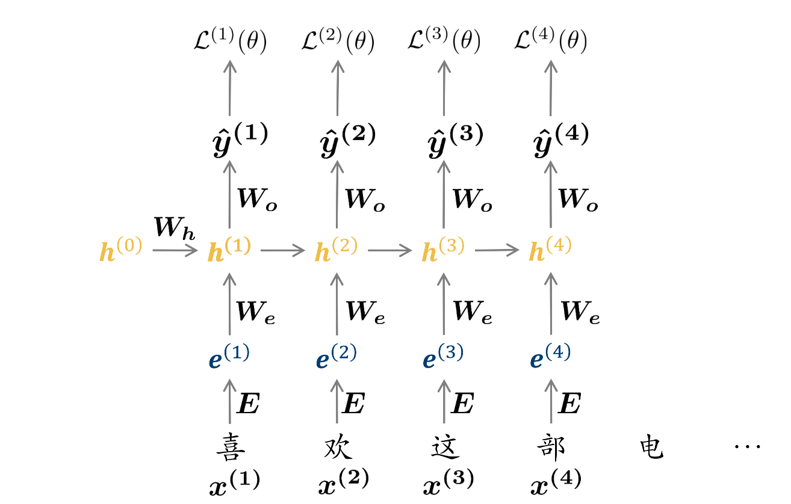
- RNN 的梯度计算：由于权重 , , 在所有时间步都是共享的，一个参数在 时刻的梯度，会受到 时刻以及所有未来时刻损失的影响
- 这意味着误差需要沿着时间步反向传播，这个过程被称为通过时间的反向传播 (BPTT)
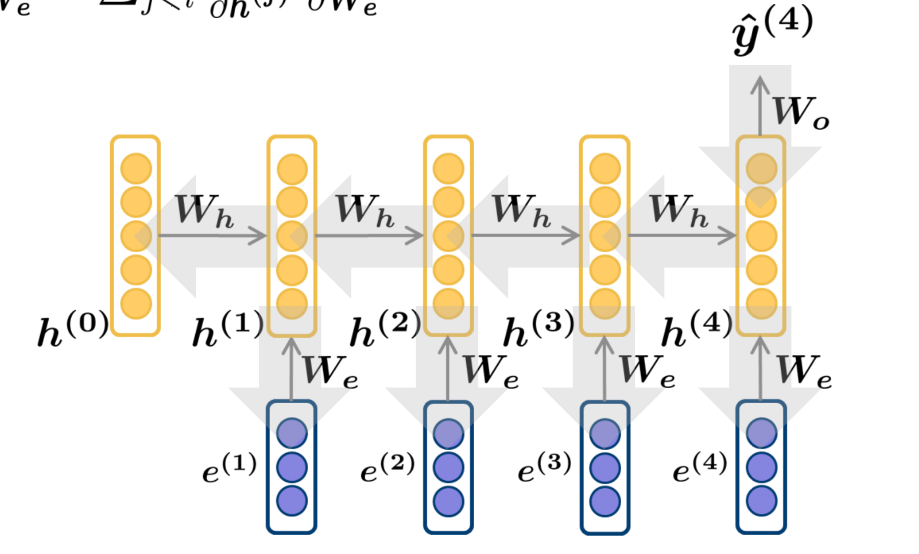
- RNN 的问题：RNN 在理论上可以捕捉无限长的依赖，但在实践中却很困难，主要原因是梯度消失/爆炸问题
- 数学根源：在 BPTT 中，梯度从后向前传播时，需要反复连乘权重矩阵
- 如果 的模（或最大奇异值）大于 1，经过多次连乘后，梯度会指数级增长，导致梯度爆炸（训练不稳定）
- 如果 的模小于 1，经过多次连乘后，梯度会指数级衰减至 0，导致梯度消失
- 梯度爆炸的解决：可以通过梯度裁剪 (gradient clipping) 来解决，即当梯度的范数超过一个阈值时，就将其缩放到阈值大小
- 梯度消失：
- 根源：信息在时间维度上传递时的无差别衰减
- 后果：模型无法学习到长距离依赖关系
- 例如，在 “This kind of books is/are great.” 中，决定动词形式的是远处的 “kind” 而非 “books”，如果梯度在传回到 “kind” 之前就消失了，模型就无法学到这个语法规则
- 解决思路：向下一时刻传递信息时，考虑当前时刻的上下文情况，有选择地保留、遗忘或更新信息
- 我们需要一种机制，让模型可以根据当前输入 的重要性，来动态地决定应该保留多少 中的旧信息，并添加多少新信息
- 数学根源：在 BPTT 中，梯度从后向前传播时，需要反复连乘权重矩阵
长短时记忆网络 LSTM 及 GRU
长短时记忆网络 (Long Short-Term Memory, LSTM)
LSTM 是 RNN 的一种高级变体，旨在解决梯度消失问题，从而更好地捕捉长距离依赖。
-
核心思想：
- 分离长期记忆与短期记忆：
- 长期记忆 (Cell State)：引入一个新的向量 ，负责存储和传递长期的状态信息，每一时刻根据上下文情况更新，且不能被外界直接观察
- 短期记忆 (Hidden State)： 依然存在，但其角色变为当前时刻被“激活”的长期记忆，它根据当前上下文，从长期记忆 中读取信息，用于指导当前时刻的输出和下一时刻的长期记忆更新
- 门控机制 (Gating Mechanism)：引入了门 (Gate) 的概念来精细地控制信息的流动
- 门是什么：一个与记忆向量维度相同的向量，其每个元素都是 0 到 1 之间的实数（通过 Sigmoid 激活函数得到）
- 如何工作：将“门”向量与另一个信息向量进行逐元素相乘
- 当门的值接近 0 时，相当于“关闭”，信息无法通过
- 当门的值接近 1 时，相当于“开启”，信息可以顺利通过
- 动态生成：门是根据当前输入 和上一时刻的短期记忆 动态生成的，这使得 LSTM 可以根据上下文智能地控制信息流
- 分离长期记忆与短期记忆：
-
LSTM 的公式与三个核心门：在每个时间步 ，LSTM 输入词向量 ，通过三个门来更新其长期记忆 和短期记忆
- 遗忘门 (Forget Gate, )：决定应该从上一时刻的长期记忆 中丢弃哪些信息。
- 输入门 (Input Gate, )：决定当前时刻有哪些新的信息可以被写入长期记忆
- 输出门 (Output Gate, )：决定从更新后的长期记忆 中，提取哪些信息作为当前时刻的短期记忆 输出出去
- 遗忘门 (Forget Gate, )：决定应该从上一时刻的长期记忆 中丢弃哪些信息。
-
状态更新：
- 更新长期记忆 ：
- 生成候选单元状态：
- 更新单元状态：第一项表示忘记旧信息，第二项表示学习新信息
- 生成候选单元状态：
- 更新短期记忆 ：从长期记忆中过滤并输出当前所需的信息
- 更新长期记忆 ：
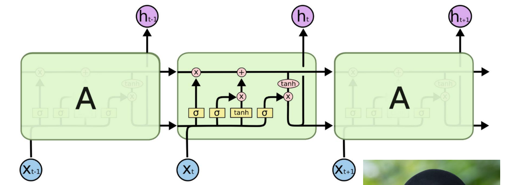
- 梯度消失的缓解：LSTM 让网络能够更容易的保留远距的信息，从而极大的缓解了梯度消失的问题
- 朴素 RNN 需要 为单位矩阵以完全保留历史信息
- 而 LSTM 只需要让遗忘门 的值为全 1，就可以完全保留历史信息
门控循环单元 (Gated Recurrent Unit, GRU)
GRU 是 2014 年提出的 LSTM 的一个简化变体，它同样非常有效。
不同语言模型效果对比
Lecture 5: 分词
Lecture 6: 文本分类
Lecture 7: 文本检索
Lecture 8: 序列标注
Lecture 9: 机器翻译与 Transformer 模型
Lecture 10: 文本生成
Lecture 11: 预训练语言模型
Lecture 12: 大语言模型的分布式训练
Lecture 13: 预训练语言模型的有监督微调
Lecture 14: RLHF: 从人类反馈中学习
Lecture 15: 大语言模型的高效化策略
Lecture 16: 新的发展方向
16-1: 混合专家模型 (MoE)
16-2: 检索增强生成 (RAG)
16-3: 多模态大模型 (MLLM)
参考资料
本文参考上海交通大学《自然语言处理》课程 CS3602 林洲汉老师的 PPT 课件整理。